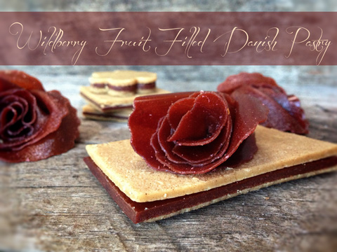
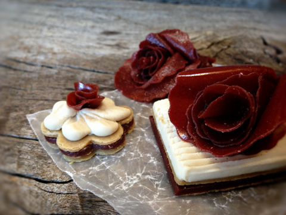

Wildberry Fruit Filled Danish Pastry

Danish pastries can be topped with chocolate, sugar, or icing, OR one of my favorites… raw white cake frosting. They can also be stuffed with jam, marzipan, raw fruit leathers, or custard. As you can see, this is my raw take on this dessert.
For fruit leather flavor ideas, here are some ideas to get the creative juices flowing. If you want to make your own flavor of fruit leather but need a little help on how to go about it, you can visit here for instructions on how to go about it.
To be honest, this treat tastes just like a pop tart! A while ago I decided it was time to work on taking a picture, for a tutorial on how to make Fruit Leather Flowers. After I was finished, I had a pile of fruit leather scraps on my counter. Naturally, they weren’t going to go to waste. On my other counter, I had a few leftover phyllo dough squares from making my Middle Eastern Nut-Filled Baklava with Honey Sweet Cream. Hmmm, fruit leather…. dough…fruit leather….dough. I took a piece of fruit leather and tore off a section of dough and popped it into my mouth. Within 5 seconds, my brain was racing… “What does that taste like… omgosh that is amazing…. taste taste taste…POP TARTS! It tastes just like a pop tart!” What a trip. This is where the fun began.
I had some full sheets of fruit leather, so I cut them into the same sized squares as the phyllo dough that I had already. I sandwiched the fruit leather in between. Frosting. Though it looked beautiful without it, I just knew that it would take it to the next level. I had some raw white cake frosting in the fridge… so I piped that on top and placed one of my fruit leather flowers on top of that! You can see in the photo that I also cut out a few other shapes with cookie cutters. I love playing with my food.
Today, we had some bricklayers here, and they were working far too hard, so I took them out some tea and gave Adan one of these treats. With his large, calloused, dirty hands he stood there holding this delicate pastry. He held it up, he looked at it and then looked at me out of the corner of his eye. He took a bite… “Well? Is it good?” Silence… he shook his head no. My heart sank when he said, “It is DELICIOUS!”
The key to this dessert is not only the amazing dough but the fruit leather. It offers great texture, and it isn’t “wet.” I don’t recommend using a fruit puree or anything wet because it would cause the dough to get soggy. I also recommend using 2 -3 layers of fruit leather in between the dough so that it is thick enough to have a taste and balance against the flavor and texture of the dough. I hope you enjoy this recipe.
Ingredients:
Cinnamon “phyllo” dough:
- 1 1/2 cups soaked raw cashews, soaked 2+ hours
- 1/2 cup water
- 2 Tbsp fresh lemon juice
- 2 Tbsp raw honey or raw coconut nectar
- 1 Tbsp vanilla extract
- 1/2 tsp ground cinnamon
- 1/4 tsp Himalayan pink salt
Filling:
Preparation:
Dough:
- Soak, drain, and rinse the cashews.
- In a high-speed blender (Vitamix or Blendtec) combine the cashews, water, lemon juice, honey, vanilla, cinnamon, and salt. Blend until the sauce is smooth and creamy. Test for grittiness by rubbing a bit between your thumb and finger. If you feel any grit, keep blending. Depending on your machine, this can take 1-5 minutes.
- Pour the batter on the teflex sheet that comes with the dehydrator. I use the Excalibur dehydrator which has a 16 x16″ tray. I used one tray, spreading the batter to all edges. Make sure that you don’t spread the batter thinner around the edges. This will prevent the edges from getting brittle from drying quicker than the center.
- Dehydrate at 145 degrees (F) for 1 hour, then reduce to 115 degrees (F) and dehydrate for an additional 10-15 hours. Check the dough every few hours to make sure that you don’t over-dry the dough. The texture should be pliable like fruit leather. While drying, you can make the filling and cream sauce.
- Allow to cool, then score into 2 x 3″ pieces. You can cut them any size that you want, but I found this size to be perfect for a single serving.
Filling and assembly:
Option 1 ~
- Fruit leather; if you are making your own fruit leather, I suggest making it into a large square sheet. If you have an Excalibur dehydrator, make a full sheet of phyllo dough (from edge to edge) and make the fruit leather the same size. That way they are the same size.
- Cut the dough in half and cut the fruit leather in half.
- Layer the fruit leather on top of each other, stacking it two high. Now place the fruit leather on one of the half sheets of dough.
- Place the second half-sheet of dough on top.
- Using a ruler for a straight edge. Cut the pastries into the desired shape and sizes.
Option 2 ~
- If your fruit leather is round in shape. Cut square or rectangle shapes out of it, setting the scrapes aside for a mid-afternoon snack.
- Cut the phyllo dough into the same shape and sizes.
- Stack two slices of fruit leather in between two slices of dough
Frosting:
- I used this (piping tip) to spread a “sheet” of frosting over the top. I had cut my pastry the same width of the piping tip.
- Lay the tip on one end and with even steady pressure, take the frosting to the other end in one stroke.
Storage:
- Store in an airtight container in the fridge for 5-7 days.
- Make sure that they don’t touch and don’t layer them on top of one another.

After scraping as much of the dough batter as you can out of the blender… add
1 cup of your favorite milk and blend for 20 seconds. Pour into a glass and enjoy!
Go ahead; you deserve it! Not only that, but it helped clean out your blender.
You can thank me later. :)

Spread the batter all the way to edges of the dehydrator tray. Don’t worry if it slops
over onto the rim of the tray. The main thing is to spread the batter evenly. Don’t
have a thick center and thin edges. If you do, the dough won’t dry evenly, and the edges
will be brittle.

If you got some of the batter on the edge of the tray, slide your finger or damp cloth
tip down the edges to clean them up. Place in the dehydrator and continue to
follow the instructions that I wrote out above.



© AmieSue.com